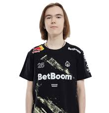
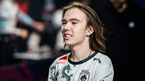

donk 1v5
Родился 25 января 2007 года в Томске. В Counter-Strike Данил начал играть в 4 года,
вместе со своим братом. Через два года они перешли на новую версию игры. Юноша очень много
времени уделял тренировкам, а из-за хорошей учёбы родители никак не вмешивались в его
многочасовые тренировки. В 14 лет Данил смог пройти в европейский FPL-C, что является
высоким достижением для его возраста. После такого достижения его заметил OverDrive,
который, сыграв с парнем несколько игр, посоветовал его академии Team Spirit. Однако
организация не спешила подписывать с игроком контракт: из-за возрастных ограничений
Данил не мог принимать участие в крупных турнирах. Сказывалась также посредственная
игра парня за новую команду: за 22 карты на семи турнирах он в среднем набирал 0.97 рейтинга.
Несмотря на все сложности, стороны смогли договориться и Данил стал выступать
за академию Team Spirit[2][3][4].
Выступая за академию Team Spirit Данил показывал неплохие индивидуальные показатели.
По итогам 2022 года sh1ro, занявший в том году 3 место по версии портала HLTV, отметил его талант и сказал,
что в будущем игрок попадет в двадцатку лучших игроков года[5]. В FPL также высоко
оценивали показатели парня и говорили, что «в свои 15 лет Данил является одним из самых
доминирующих рифлеров, которых когда-либо видела лига»[6]. Академический состав
стабильно рос и по итогу за несколько месяцев уверенно держался в топ-50 лучших команд мира.
Основной состав организации наоборот переживал не самый лучший период: трое игроков
ушли из состава и где-то надо было искать новых. Тогда было принято решение взять
трио из академии, в которое и вошёл Данил[4][7].
Команда быстро сыгралась и уже на первом турнире CCT North Europe Series #6 они
заняли первое место. На том турнире Данил оказался лучшим по индивидуальным показателям,
а также занял четвёртое место среди всех игроков турнира. Уже на следующем турнире CCT
Online Finals #2 состав занял второе место, а donk стал первым игроком чемпионата
по личным показателям[источник не указан 153 дня]. На своем первом LAN-турнире Dunav Party парни
заняли первое место, а donk все также стал лучшим игроком турнира[8][9].
Свое первое звание MVP от портала HLTV Данил получил за победу на турнире BetBoom Dacha,
закончив его с рейтингом 1.31[10]. Donk стал вторым самым молодым обладателем MVP
в истории в возрасте 16 лет и 10 месяцев[11]. Попав на один из самых важных турниров
года IEM Katowice 2024, Данил стал демонстрировать высокий уровень игры. На том турнире
ни одна команда не смогла победить Team Spirit. Портал HLTV предположил, что выступление
donk стало самым лучшим дебютом на больших турнирах за всю историю игры. Также Крышковец повторил
рекорд боснийского игрока NiKo по индивидуальной статистике на крупном турнире[12]. На том турнире
Данил получил MVP, тем самым стал самым молодым игроком, получившим эту награду на больших турнирах.
На том турнире игрока критиковали за его выкрикивания в сторону оппонентов. Например, украинский
киберспортсмен и тренер B1ad3 отметил хорошую игру donk, но при этом сказал, что юному киберспортсмену
следовало бы исправить свое поведение[13].
На своем первом мейджоре PGL Major Copenhagen 2024 Team Spirit прошли в стадию плей-офф
со счетом 3—0 (3 победы), однако в финальной части турнира, несмотря на то, что многие считали
Team Spirit главными претендентами на трофей[14], они проиграли в первой же игре команде FaZe
Clan, которая на тот момент занимала первое место в рейтинге HLTV. В последнем матче Данил
стал единственным игроком команды, кто вышел в «плюс» по статистике, а сам турнир он закончил
с рейтингом 1.35 и стал лучшим игроком команды[15][16].
После мейджора команда продолжила неплохо выступать: входили в топ-3 на двух последующих турнирах.
На BetBoom Dacha Belgrade 2024 donk и вовсе стал MVP несмотря на то, что его команда заняла второе
место. Самым последним турниром сезона стал BLAST Premier: Spring Final 2024, на котором Team Spirit
заняли первое место, а Данил стал самым ценным игроком чемпионата. По окончании данного турнира команда
Team Spirit впервые в своей истории заняла первую строчку в рейтингах лучших команд мира от Valve и HLTV[17].
Также по окончании сезона HLTV назвал лучшие команды и игроков первой половины 2024 года
— они имеют самые большие шансы попасть в номинации на HLTV Awards 2024[18]. По итогу donk вошёл
в список лучших новичков и энтри-фрагеров первой половины 2024 года, а также вошёл в тройку
лучших игроков первой половины 2024 года (вместе с m0NESY и ZywOo, среди которых у donk
самый высокий показатель рейтинга 2.0)[19]. В декабре 2024 года выиграл чемпионат мира Perfect
World Shanghai Major 2024 в Шанхае, Китай[20].
После мейджора Данил занял первое место в рейтинге лучших
игроков мира по версии портала HLTV[21], а на HLTV Awards
2024 победил в номинациях «Энтри-фрагер года» (англ. Opener
of the Year), «Новичок года» (англ. Rookie of the Year) и
«Хайлайт года» (англ. Highlight of the year)[22][23][24].